Masz dość ekspertów marketingu,
którzy nigdy nie ryzykowali
własnych pieniędzy, rozwijając biznes?
Szukasz kogoś, kto skupi się nie tylko na marketingu,
ale zobaczy Twoją firmę w całości?
Zbudowałem biznes na rynku mediów, rozwinąłem go i sprzedałem. Dziś pomagam firmom rosnąć, tworząc marketing nieszablonowy, szczery, poruszający emocje, a dzięki temu skuteczny. Bo najlepsze marki nie muszą krzyczeć głośniej niż konkurencja. One mówią wyraźnie i prawdziwie.
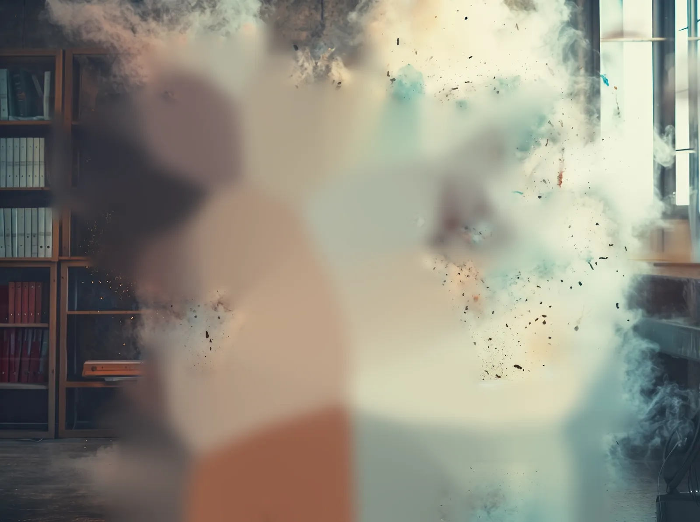
Marki, z którymi pracowałem
Poznaj firmy, dla których tworzyłem kampanie reklamowe, strategie marketingowe, multimedia oraz widowiskowe eventy.
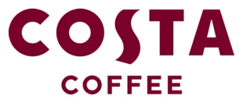
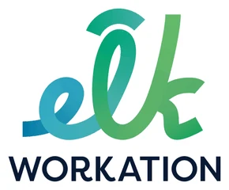
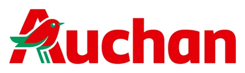
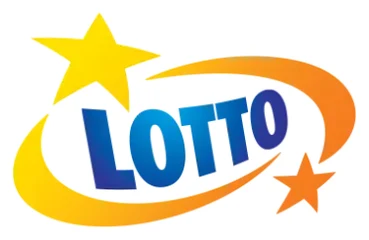
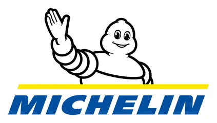
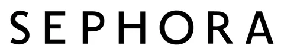
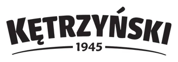
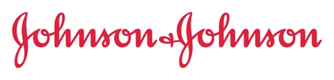
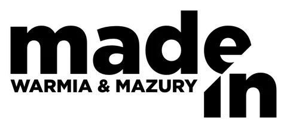
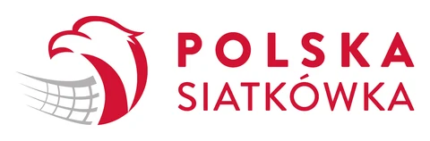
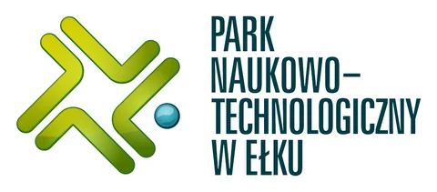
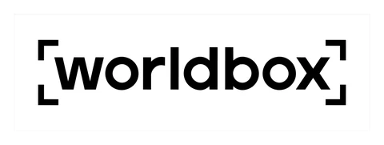
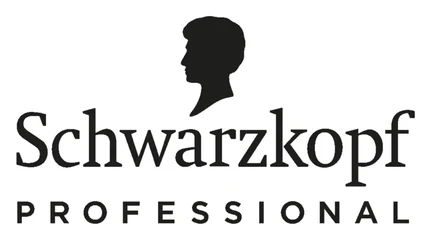
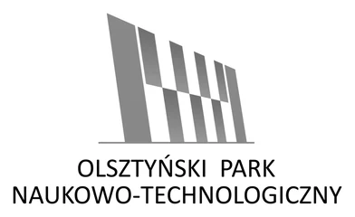
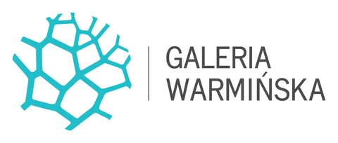
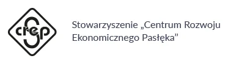
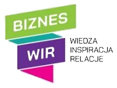
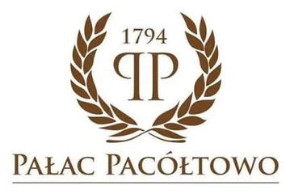
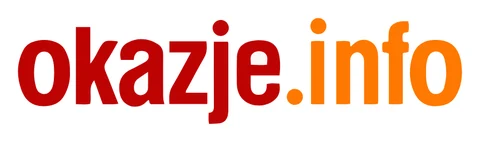
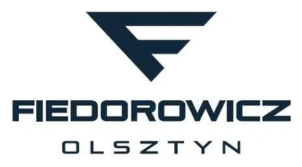
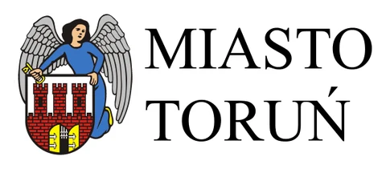
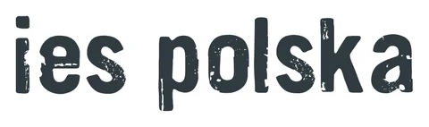
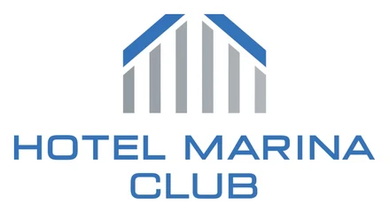
Jak możemy współpracować
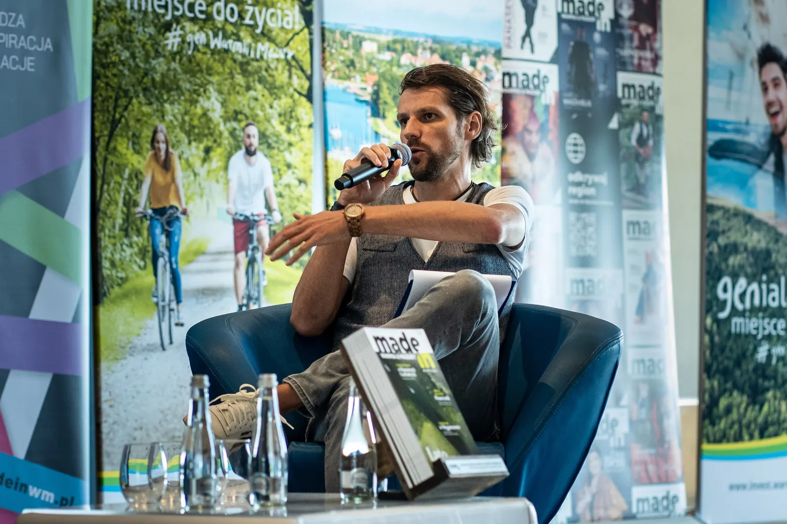
Mentoring i doradztwo biznesowe
Dla tych, którzy szukają kogoś, kto widzi firmę w całości – nie tylko marketing.
Sprawdź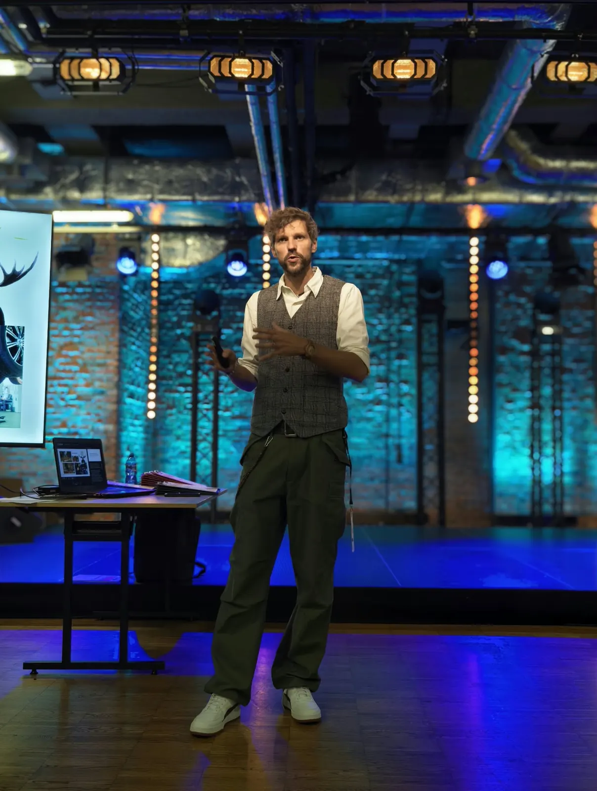
Konferencje, wykłady i wystąpienia
Prelegent, który prowokuje, inspiruje i wnosi na salę energię espresso.
SprawdźSzkolenia
dla firm
Kreatywny rozruch, strategia i kampania wypracowane z Twoim zespołem.
SprawdźWarsztaty kreatywności
Trening myślenia nieoczywistego. Łamiemy schematy i założenia.
SprawdźProjekt strategiczny
Kampania, audyt marki, rebranding lub koncepcja wydarzenia – od A do Z.
Sprawdź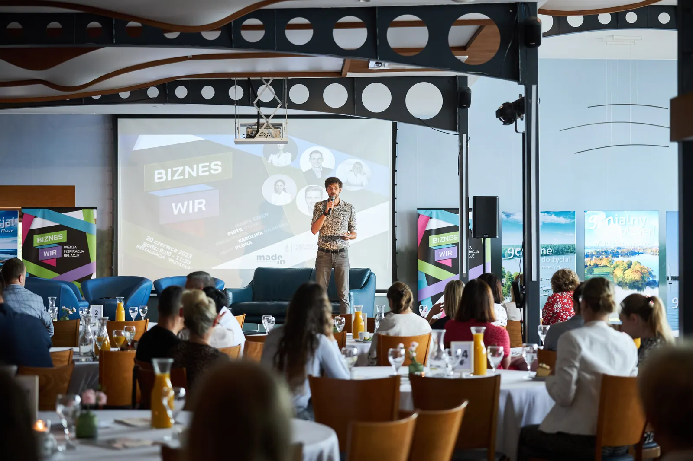
Equity partnership
Wspólnik, który zbuduje markę od zera i zaryzykuje razem z Tobą.
SprawdźProjekty CSR
dla firm
Odpowiedzialność społeczna, która wynika z wartości, a nie z raportu.
SprawdźNa scenie
Konferencje, szkolenia, wykłady i wystąpienia. Kliknij zdjęcie, aby je powiększyć.
Jestem buntownikiem marketingu… z wyboru
Przez lata pracowałem w świecie marketingu, w którym liczą się wyłącznie zasięgi, wskaźniki, wykresy sprzedaży i nieustanny wzrost. Tak, przez te lata uczestniczyłem w procesie kreowania nieistniejących potrzeb i niepohamowanego konsumpcjonizmu.
Ale to był ważny czas w moim życiu: kilkanaście lat ciężkiej pracy i rozwoju, prowadząc dwie firmy na rynku mediów i reklamy. Jako dyrektor kreatywny agencji marketingowej, realizując projekty dla największych firm na rynku, zdobyłem całą masę wiedzy i doświadczenia. Muszę też szczerze przyznać, że kreatywnie nieraz mogłem się wyszaleć, tworząc nieszablonowe kampanie reklamowe, strategie marketingowe, multimedia czy eventy.
Ale zbyt wiele z tych projektów nastawionych było jedynie na finansowy zysk, realizowany bez szacunku dla klienta. Dlatego dziś wybieram inną drogę.
Przeciw czemu się buntuję?
- Buntuję się przeciw marketingowi, który napędza nadmierny konsumpcjonizm.
- Buntuję się przeciw korporacjom i agencjom marketingowym, które zamiast szukać realnych potrzeb klientów, produkują sztuczne problemy i potrzeby, by sprzedać kolejne produkty.
- Sprzeciwiam się ślepemu kultowi wzrostu za wszelką cenę, który kończy się degradacją środowiska i wypaleniem ludzi.
- Buntuję się przeciw branżom, które mogłyby leczyć, wspierać, rozwijać i chronić, ale wybierają wyłącznie finansowy zysk kosztem zdrowia, jakości życia i dobrostanu planety.
- Buntuję się przeciwko marketingowi, który pustoszy, wykorzystuje i manipuluje.
Po czyjej stronie stoję?
- Stoję po stronie przedsiębiorców, którzy tworzą produkty, usługi i doświadczenia poprawiające jakość życia – wartościowe, wytrzymałe, funkcjonalne i dobrze zaprojektowane.
- Stoję po stronie klientów, którzy chcą kupować mądrzej.
- Stoję po stronie firm działających blisko człowieka, blisko jego prawdziwych potrzeb, pragnień i marzeń.
- Stoję po stronie firm, które myślą o przyszłości planety i kolejnych pokoleń – nawet jeśli oznacza to wolniejszy wzrost (choć nie zawsze musi tak być).
Co obiecuję firmom, z którymi współpracuję?
- Pomagam rozwijać biznes, tworząc nieszablonowy, autentyczny, poruszający, a jednocześnie skuteczny marketing.
- Pokazuję, że troska o ludzi i środowisko nie wyklucza wzrostu – przeciwnie, staje się przewagą konkurencyjną.
- Uczę podczas szkoleń i wykładów, jak robić marketing, który jest spójny z wartościami firmy i realnymi potrzebami klientów.
- Pomagam nazwać i wyrazić wartości firmy tak, aby klienci mogli je zobaczyć, poczuć i nagrodzić swoją lojalnością.
- W mojej pracy bunt jest tylko początkiem – prawdziwą pracę wykonuję, projektując konkretne działania, kampanie, strategie i rozwiązania, które wyróżniają firmę na rynku.
- Jeśli wierzysz, że biznes może rosnąć, i jednocześnie chcesz zostawiać świat w lepszym stanie, niż go zastałeś – jesteśmy po tej samej stronie.
Jakich zleceń nie przyjmuję?
- Nie pracuję dla firm i korporacji, których działalność w oczywisty sposób szkodzi ludzkości lub środowisku naturalnemu.
- Nie wspieram modeli biznesowych opartych na świadomym wprowadzaniu klientów w błąd, manipulacji czy sprzedawaniu produktów, które realizują wykreowane potrzeby.
- Nie pomagam lepiej opakować tego, co w środku pozostaje nieetyczne.
Co mówią klienci
Pierwsza osoba od marketingu, która zaczęła od pytań o nasz model biznesowy, a nie o budżet na reklamę. Po trzech miesiącach wiedzieliśmy, dokąd idziemy i dlaczego.
Imię NazwiskoStanowisko, Nazwa firmyWystąpienie Michała było najczęściej komentowanym punktem całej konferencji. Prowokacyjnie, z humorem i z konkretami, które uczestnicy wdrażali już następnego dnia.
Imię NazwiskoStanowisko, Nazwa firmyWarsztat kreatywności zmienił sposób, w jaki nasz zespół rozmawia o pomysłach. Mniej „nie da się”, więcej „sprawdźmy”.
Imię NazwiskoStanowisko, Nazwa firmySzukaliśmy agencji, a znaleźliśmy partnera, który patrzy na firmę jak przedsiębiorca. To zupełnie inna rozmowa.
Imię NazwiskoStanowisko, Nazwa firmyProjekt CSR, który razem przygotowaliśmy, był prawdziwy i poruszający. Zaangażował zespół bardziej niż jakakolwiek integracja.
Imię NazwiskoStanowisko, Nazwa firmyPo szkoleniu nie zostały nam żółte karteczki, tylko gotowy szkic strategii i plan kampanii. Dokładnie tego potrzebowaliśmy.
Imię NazwiskoStanowisko, Nazwa firmyMichał powiedział nam kilka niewygodnych rzeczy o naszej marce. Miał rację. Rebranding, który z tego wyszedł, obronił się wynikami.
Imię NazwiskoStanowisko, Nazwa firmyEnergia na sali po jego wykładzie była jak po porannym espresso. Drugi dzień konferencji wreszcie nie był „tym gorszym”.
Imię NazwiskoStanowisko, Nazwa firmy
Fotorelacje
Zadzwoń, jeśli szukasz prelegenta, który prowokuje, inspiruje, skupia się na praktycznych rozwiązaniach, wnosi na salę energię espresso.
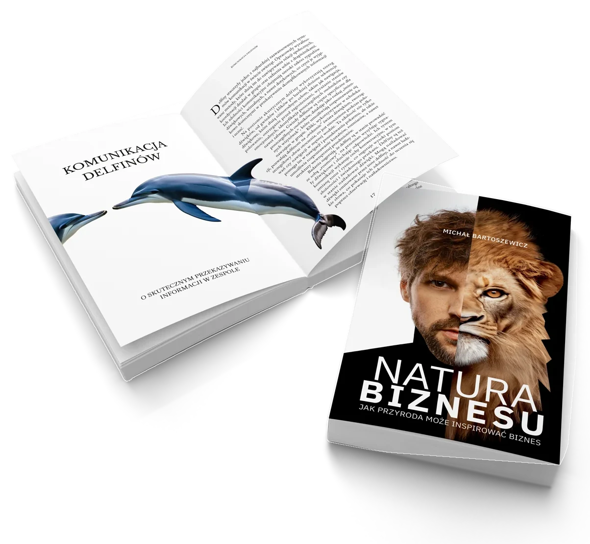
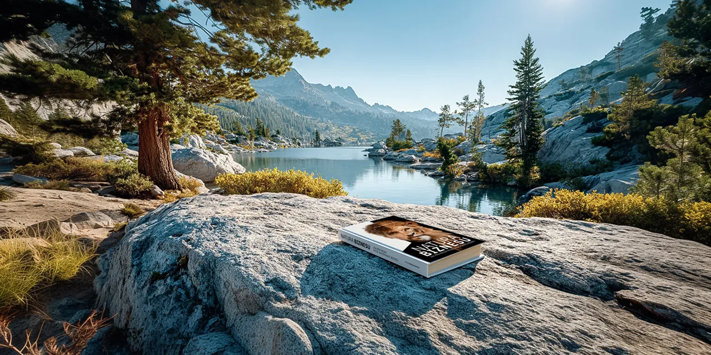
Obejrzyj na YouTubeNatura Biznesu
Natura od miliardów lat testuje modele skalowania, komunikacji, adaptacji, odbudowy i tworzenia innowacji, o jakich marzy każdy przedsiębiorca. Książka Natura Biznesu zabierze Cię w podróż po spektakularnych wynalazkach ewolucji i pokaże, jak przełożyć je na strategie rozwoju Twojej firmy.
„Tak jak drzewo w lesie nie istnieje w izolacji, również Twoja firma jest częścią gospodarki, społeczności i środowiska – większego ekosystemu, w którym wszystko jest połączone. Z całą swoją złożonością, mądrością i różnorodnością przyroda może być potężnym źródłem inspiracji dla świata biznesu, gdzie nieustannie dążymy do zwiększania efektywności, innowacyjności i zysków. Dlatego w tej książce zabieram czytelników w podróż po spektakularnych wynalazkach natury i przekładam je na inspiracje pomocne w rozwoju firmy.” Michał Bartoszewicz